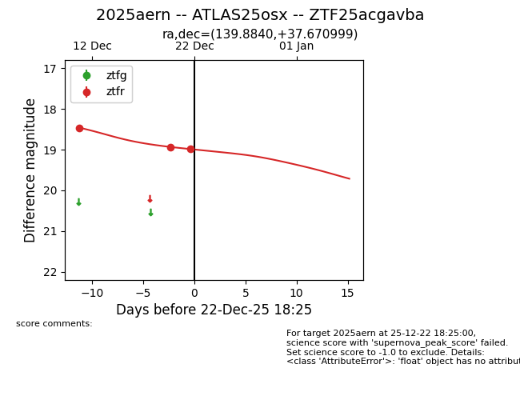
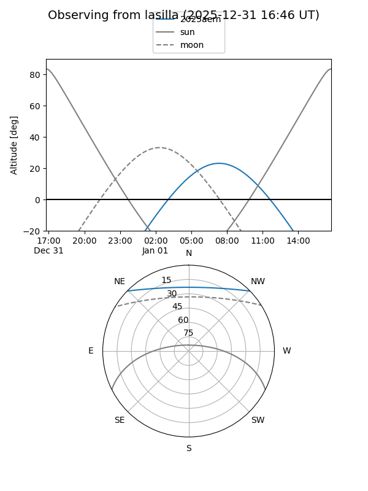
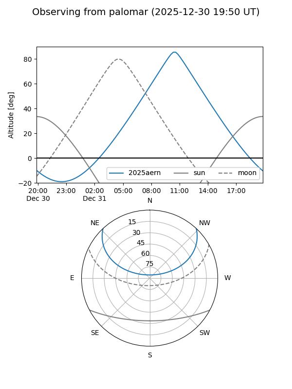
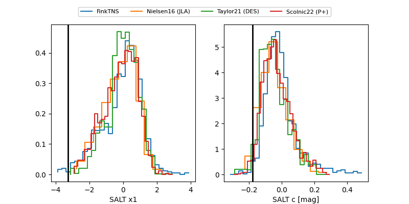

2025aern
Target 2025aern at 2025-12-24 18:38
Aliases and brokers:
FINK: fink-portal.org/ZTF25acgavba
Lasair: lasair-ztf.lsst.ac.uk/objects/ZTF25acgavba
ALeRCE: alerce.online/object/ZTF25acgavba
TNS: wis-tns.org/object/2025aern
YSE: ziggy.ucolick.org/yse/transient_detail/2025aern
alt names
ZTF25acgavba (ztf,fink_ztf)
2025aern (tns,yse)
ATLAS25osx (atlas)
Coordinates:
equatorial (ra, dec) = 139.8840,+37.67100
equatorial (HMS+DMS) = 09:19:32.17,+37:40:15.60
galactic (l, b) = (185.6039,+44.65663)
Flags:
Photometry:
last ztfr=18.99
3 ztfr detections
Lightcurve

Visibility


Additional plots
